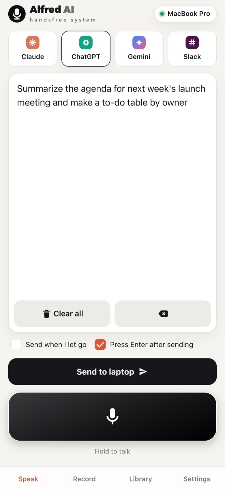
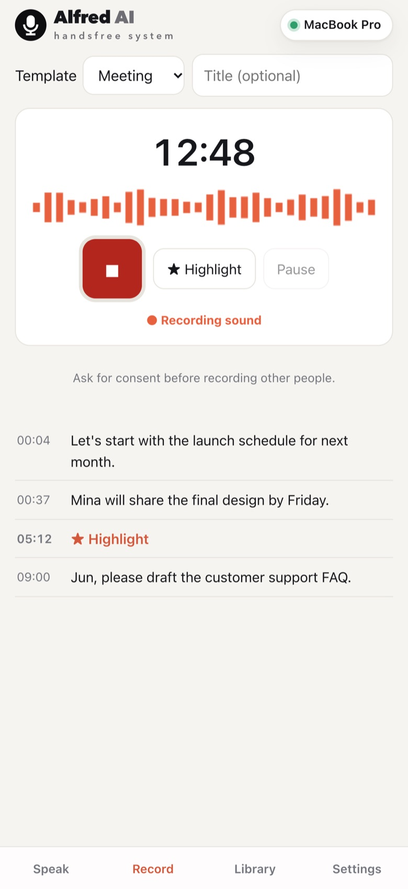
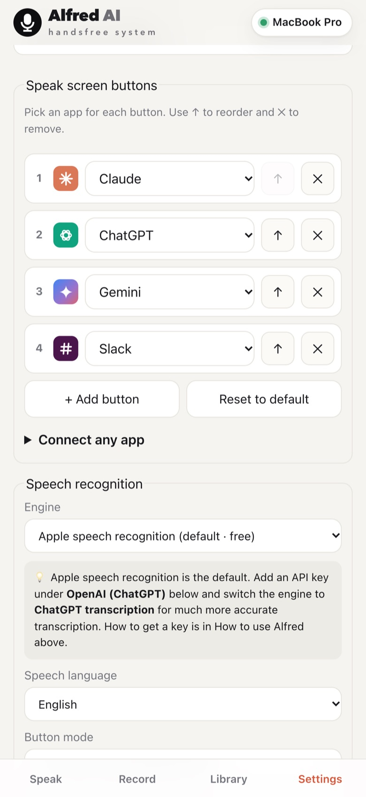

Just talk.
Talkey passes it to your AI.
Hold the mic button on your iPhone and speak. Your words land in ChatGPT, Claude or Gemini on your laptop and get sent. It's not a dictation app. It's an assistant that lets you work with AI without the keyboard.
The Mac helper is notarized by Apple. You need it to send text to your laptop and to talk with the mouse.
What it does
Speak, and it's typed into your laptop's AI
ChatGPT, Claude, Gemini, Perplexity, Grok, Copilot, Meta AI, DeepSeek and Slack. It uses the Mac app if you have it, or the browser if you don't.
Buttons you set up your way
Pick the AI for each button and reorder them. You can also connect any app on your laptop, like Notion, Notes or a messenger.
More accurate dictation
Apple speech recognition is the free default. Add an OpenAI key and ChatGPT transcribes jargon and mixed languages accurately.
Recording that keeps only speech
Silence is skipped, so only the talking is saved. It keeps going with the screen off, and you can check it from the Lock Screen.
AI meeting notes
One-line summary, decisions, to-dos by owner, speaker labels, translation, and questions across all your recordings.
On the Mac, talk with your mouse
In any text field, double-click and hold for 1 second, then speak. The text goes right where your cursor is. No phone needed.
Screens



Connect your laptop (once, 2 minutes)
- Install the app — Get Talkey from the App Store.
- Install the Mac helper — Open the zip from the button above, move Talkey Helper to your Applications folder, and open it.
- Allow Accessibility — In System Settings → Privacy & Security → Accessibility, turn the helper on. It needs this to type into AI text fields.
- Pair from your phone — In Talkey, go to Settings → Find laptop on this Wi-Fi, pick your laptop, and enter the 6-digit code shown in the helper window. After that it connects automatically.
- Speak and send — Pick an AI from the buttons at the top, hold the mic button, speak, and let go.
Your phone and laptop need to be on the same Wi-Fi. For the full guide, open Settings → How to use Talkey in the app.